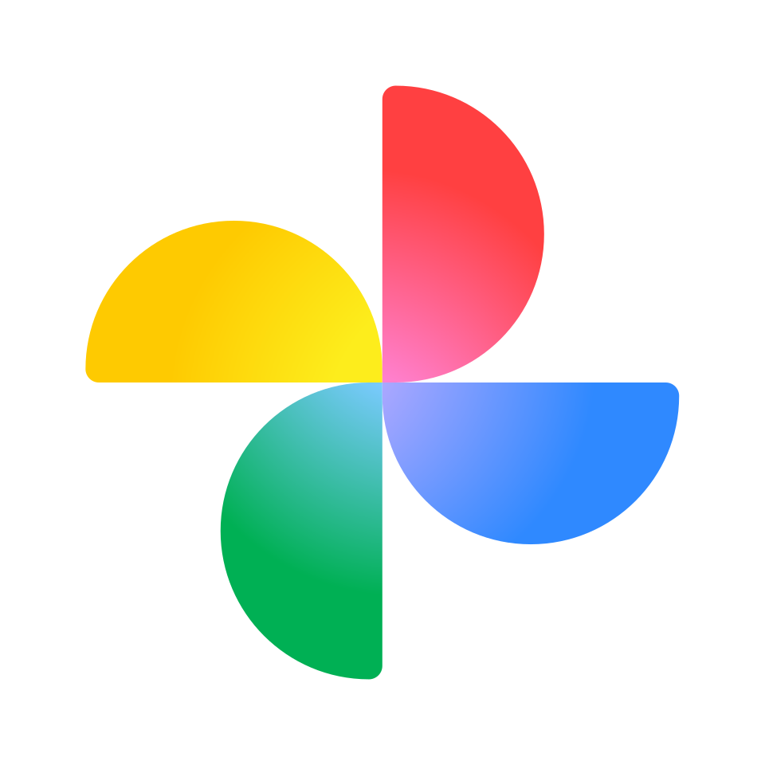
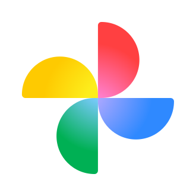
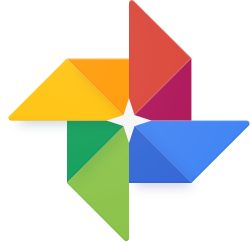

Google Photos
Source: https://en.wikipedia.org/wiki/Google_Photos
Category: products_consumer
Depth: 1
Summary
Google Photos is a photo sharing and storage service developed by Google. It was announced in May 2015 and spun off from Google+, the company's former social network.
Images



Full Article
Photo storage service
Not to be confused with Google Images.
Google Photos is a photo sharing and storage service developed by Google. It was announced in May 2015 and spun off from Google+, the company's former social network.
Google Photos shares the 15 gigabytes of free storage space with other Google services, such as Google Drive and Gmail. Users can upload their photos and videos in either quality setting, original or compressed (photos and videos up to 16 megapixels and 1080p resolution, respectively), that will count towards the free storage tier (compressed items uploaded before June 1, 2021, along with items uploaded via Pixel phones released before that date, are unlimited). Users can expand their storage through paid Google One subscriptions.
The service automatically analyzes photos, identifying various visual features and subjects. Users can search for anything in photos, with the service returning results from three major categories: People, Places, and Things. The computer vision of Google Photos recognizes faces (not only those of humans, but pets as well), grouping similar ones together (this feature is only available in certain countries due to privacy laws); geographic landmarks (such as the Eiffel Tower); and subject matter, including birthdays, buildings, animals, food, and more.
Different forms of machine learning in the Photos service allow recognition of photo contents, automatically generate albums, animate similar photos into quick videos, surface memories at significant times, and improve the quality of photos and videos. In May 2017, Google announced several updates to Google Photos, including reminders for and suggested sharing of photos, shared photo libraries between two users, and physical albums. Photos automatically suggested collections based on face, location, trip, or other distinction.
Google Photos received critical acclaim after its decoupling from Google+ in 2015. Reviewers praised the updated Photos service for its recognition technology, search, apps, and loading times. Nevertheless, privacy concerns were raised, including Google's motivation for building the service, as well as its relationship to governments and possible laws requiring Google to hand over a user's entire photo history. Google Photos has seen strong user adoption. It reached 100 million users after five months, 200 million after one year, 500 million after two years, and passed the 1 billion user mark in 2019, four years after its initial launch. Google reports as of 2020, approximately 28 billion photos and videos are uploaded to the service every week, and more than 4 trillion photos are stored in the service total.
History
Google Photos is the standalone successor to the photo features previously embedded in Google+, the company's social network. Google launched the social network to compete with Facebook, but the service never became as popular as Facebook for social networking and photo sharing. Google+ offered photo storage and organizational tools that surpassed Facebook's in power, though Google+ lacked the user base to use it. By leaving the social network affiliation, the Photos service changed its association from a sharing platform to a private library platform.
In December 2015, Google added shared albums to Google Photos. Users pool photos and videos into an album, and then share the album with other Google Photos users. The recipient "can join to add their own photos and videos, and also get notifications when new pics are added". Users can also save photos and videos from shared albums to add them to their own, private collection. Unlike the native Photos service within iOS, Google Photos permits full resolution sharing across Android and iOS platforms and between the two.
On February 12, 2016, Google announced that the Picasa desktop application would be discontinued on March 15, 2016, followed by the closure of the Picasa Web Albums service on May 1, 2016. Google stated that the primary reason for retiring Picasa was that it wanted to focus its efforts "entirely on a single photo service"; the cross-platform, web-based Google Photos.
In June 2016, Google updated Photos to include automatically generated albums. After an event or trip, Photos will group some of the photos together and suggest creating an album with them, alongside maps to show geographic travel and location pins for exact places. Users can also add text captions to describe photos. In October, Google announced multiple significant updates; Google Photos now surfaces old memories with people identified in users' recent photos; it occasionally highlights a subset of photos when a user has recently taken a lot of images of a specific subject; it now makes animations from videos as well as photos (photo animations have been present since the start), displaying specific photos intermixed with short excerpts from longer videos in videos; and it now attempts to detect sideways and upside down photos and prompts the user to accept or reject a different orientation. For all of these features, Google touts machine learning does the work, with no user interaction required.
In November, Google released a separate app – PhotoScan – for users to scan printed photos into the service. The app, released for iOS and Android, uses a scanning process in which users must center their camera over four dots that overlay the printed image, so that the software can combine the photographs for a high-resolution digital image with the fewest possible defects. Later that month, Google added a "Deep blue" slider feature that lets users change the color and saturation of skies, without degrading image quality or inadvertently changing colors of other objects or elements in photos.
In February 2017, Google updated the "Albums" tab on the Android app to include three separate sections; one for the phone's camera roll, with different views for sorting options (such as people or location); another for photos taken inside other apps; and a third for the actual photo albums. In March, Google added an automatic white balance feature to the service. The Android app and website were the first to receive the feature, with a later rollout to the iOS app. Later in March, updates to the service enabled uploading of photos in a "lightweight preview" quality for immediate viewing on slow cellular networks before a higher-quality upload later while on faster Wi-Fi. The feature also extends to sharing photos, in which a low-resolution image will be sent before being updated with a higher-quality version. In April, Google added video stabilization. The feature creates a duplicate video to avoid overwriting the original clip.
In May 2017, Google announced several updates to Google Photos. "Suggested Sharing" reminds users to share captured photos after the fact, and also groups photos based on faces and suggests recipients based on facial recognition. "Shared Libraries" lets two users share a central repository for all photos or specific categories of images. "Photo Books" are physical collections of photos, offered either as softcover or hardcover albums, with Photos automatically suggesting collections based on face, location, trip, or other distinction. Towards the end of the month, Google introduced an "Archive" feature that lets users hide photos from the main timeline view without deleting them. Archived content still appears in relevant albums and in search. In June, the new sharing features announced in May began rolling out to users.
In December 2018, Google doubled the number of photos and videos users can store in a private Google Photos Live Album. The number increased from 10,000 to 20,000 photos, which is equivalent to the capacity for shared albums.
In September 2019, Google Photos introduced a new social media-like feature called "Memories" similar to the Stories feature in Instagram and Facebook which highlights past photos to give their users a nostalgic feeling.
On June 25, 2020, Google Photos introduced a major redesign to the mobile and web apps, accompanied by a new, simplified logo.
In March 2024, The New York Times reported that Google Photos was being used in a facial recognition program by Unit 8200, a surveillance unit of the Israeli Defense Forces, to surveil Palestinians in Gaza amid the Gaza war. Intelligence officers told the Times that the unit uploads databases of known faces to the service and uses its search functions to identify individuals. A Google spokesman commented that the service is free and "does not provide identities for unknown people in photographs."
Features
The service has apps for the Android and iOS operating systems, and a website. Users back up their photos to the cloud service, which becomes accessible for all of their devices.
The Photos service analyzes and organizes images into groups and can identify features such as beaches, skylines, or "snowstorm in Toronto." From the application's search window, users are shown potential searches for groups of photos in three major categories: People, Places, and Things. The service analyzes photos for similar faces and groups them together in the People category. It can also track faces as they age. The Places category uses geotagging data but can also determine locations in older pictures by analyzing for major landmarks (e.g., photos containing the Eiffel Tower). The Things category processes photos for their subject matter: birthdays, buildings, cats, concerts, food, graduations, posters, screenshots, etc. Users can manually remove categorization errors. Google Lens is also integrated into the service.
Recipients of shared images can view web galleries without needing to download the app. Users can swipe their fingers across the screen to adjust the service's photo editing settings, as opposed to using sliders. Images can be easily shared with social networks (Google+, Facebook, Twitter) and other services. The application generates web links that both Google Photos users and non-users can access.
A new feature showing a heat map of photo locations was added in 2020.
Outstanding issues
There are issues about data sharing and exporting, such as not being able to download pictures and videos in their original quality or with all the original data, notably GPS location info. Even downloading via the Google Takeout feature results in some of the original information missing. This could potentially lead to vendor lock in if the user wants to keep using features requiring those missing pieces of data.
Storage
Google Photos has three storage settings: "Storage saver" (formerly "High quality"), "Original quality" and "Express quality" (unavailable in certain locations). Storage saver includes photo and video storage for photos up to 16 megapixels and videos up to 1080p resolution (the maximum resolutions for average smartphone users in 2015). Original quality preserves the original resolution and quality of the photos and videos. Express quality includes photo and video storage for photos up to 3 megapixels and videos up to 480p resolution.
For the first three generations of the Google Pixel phones, Google Photos offers unlimited storage at "Original quality" for free. The original Pixel had no limits to this offer, while the Pixel 2 and 3 only offered unlimited storage at "Original quality" for photos and videos taken before January 16, 2021, and January 31, 2022, respectively, with all photos and videos taken after those dates being uploaded at "Storage saver" instead. The Pixel 3a and onwards do not offer unlimited storage at "Original quality", with the Pixel 4, Pixel 4a, Pixel 4a (5G), and Pixel 5 offering a 3-month trial for the 100 GB Google One plan to new members instead.
In November 2020, Google Photos announced that it would be ending its offering of free unlimited storage for photos uploaded in "High quality" or "Express quality" starting on June 1, 2021, due to rising demand for storage. On June 1, 2021, Google Photos changed the name of "High quality" to "Storage saver". The move was part of an effort to reduce Google's reliance on ad-based revenue and increase subscriptions. Existing photos will remain unaffected, and new photos will count towards the user's storage quota shared across Google Drive, Gmail, and Google Photos. Owners of the Google Pixel smartphones up until the Pixel 5 will remain exempt from this change.
Growth
In October 2015, five months after the launch of the service, Google announced that Google Photos had 100 million users, who had uploaded 3.72 petabytes of photos and videos.
In May 2016, one year after the release of Google Photos, Google announced the service had over 200 million monthly active users. Other statistics it revealed was at least 13.7 petabytes of photos/videos had been uploaded, 2 trillion labels had been applied (24 billion of those being selfies), and 1.6 billion animations, collages and effects had been created based on user content.
In May 2017, Google announced that Google Photos has over 500 million users, who upload over 1.2 billion photos every day.
In November 2020, Google announced that more than 4 trillion photos are stored in Google Photos, and every week 28 billion new photos and videos are uploaded.
Reception
At the May 2015 release of Google Photos, reviewers wrote that the service was among the best of its kind. Walt Mossberg of Recode declared the service the best in cloud photo storage, against its competition from Amazon (Amazon Drive), Apple (iCloud), Dropbox, and Microsoft (OneDrive). Jacob Kastrenakes of The Verge wrote that the release made Google a major competitor in the photo storage market, and that its pricing structure obsoleted the idea of paying for photo storage. Sarah Mitroff and Lynn La of CNET wrote that the service's phone and tablet apps were particularly good, and that Google Photos had a more streamlined design than Yahoo's Flickr and more organizing features than Apple's iCloud photo service.
Kastrenakes described the service's May 2015 release as evidence that Google was spinning out the "best features" of its Google+ social network. He stated that the Photos service was "always excellent", and liked that users would be able to use the service "without signing up for a new social network". Mossberg described the release as "liberation day" for the photos features that were "effectively hidden" in the "widely ignored social network". The service's strategy, as described by Josh Lowensohn of The Verge, was to put all data on Google's servers so that it can be accessed universally.
Mossberg liked the service's search function, writing that a search for "Massachusetts" "instantly brought up loads of photos of subjects". Lowensohn noted the service's speed and intelligence, especially in its ability to sort unorganized photos, as well as its photo loading times, search speeds, and simple photo editing tools. Kastrenakes compared the service's new image analysis to technology unveiled by Flickr earlier in the same month. Mossberg thought the face grouping feature was "remarkably accurate", but was most impressed by the subject-based grouping. He was surprised that a search for "boats" found both Cape Cod fishing boats and Venetian gondolas, but also noted errors such as a professional photograph registering as a screenshot.
PC Magazine's John C. Dvorak was concerned about the service's privacy. He was particularly concerned about Google's motivation for building the service, the company's relationships with existing governments, and potential laws that would require Google to provide a user's entire history of photos upon request. Dvorak compared such a scenario to inviting others to "scrounge through your underwear drawer". He criticized the service's sync functions, and preferred folders of images over an unsorted "flat database". Dvorak also highlighted the service's poor choice of photos to animate and lack of longevity guarantees, considering the company's abrupt cancellation of Google Reader. He ultimately suggested that users instead use a portable hard drive, which he considered safer and cheap.
See also
- Amazon Photos
- Flickr – Image and video hosting website
- Photos – Digital photograph manipulation app by Apple
- Picasa Web Albums – Image sharing service from Google
Footnotes
References
External links
| - v - t - e Google | |
|---|---|
| a subsidiary of Alphabet | |
| Company | |
| Development | |
| Software | |
| Hardware | |
| - v - t - e Litigation | |
| Related | |
| Italics denote discontinued products. - Category - Outline |